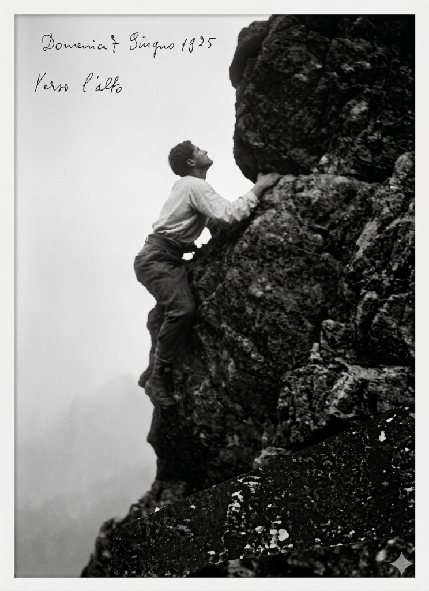
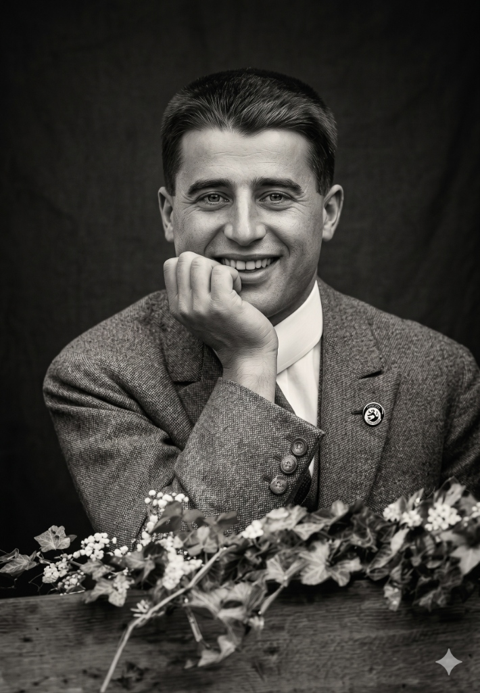

VERSO L’ALTO
El camino de un Miliciano
"Ni un paso atrás en la búsqueda de la Verdad"
Iniciá el ascenso southLas Calles de Turín
Nacido en una familia acomodada, Pier Giorgio eligió la carrera de ingeniería minera no para enriquecerse, sino para "servir a Cristo entre los mineros", una de las profesiones más duras de su época.
Su labor social era silenciosa pero incansable. Entregaba su dinero, su tiempo e incluso su propia ropa a los pobres de los barrios periféricos, viendo en ellos el rostro mismo de Jesús.
"Vivir, no ir tirando"

El Sagrario en la Cumbre

El Rosario en la Nieve
Para él, la montaña no era un simple deporte, era una vía hacia Dios. Rezaba con sus amigos en medio de la inmensidad blanca.
Comunión Diaria
"Jesús me visita cada mañana en la Santa Comunión, yo se lo devuelvo de la misera manera que puedo: visitando a sus pobres".

Vigilias Nocturnas
Pasaba largas horas de la noche en adoración profunda, forjando su fuerza interior.
Huellas en la Piedra
Los hitos de un ascenso acelerado hacia la santidad.
1901
Nacimiento en Turín
Nace en el seno de una familia burguesa. Su padre, fundador del diario La Stampa, y su madre, una pintora reconocida.
1918
Ingreso a San Vicente de Paúl
Se une formalmente a las conferencias vicentinas, comenzando su trabajo directo y personal con los más necesitados de la ciudad.
1922
Terciario Dominico
Ingresa a la orden tercera tomando el nombre de Fray Jerónimo, en honor a Savonarola, reforzando su compromiso laical radical.
1925
El Ascenso Final
Contrae poliomielitis fulminante, presuntamente contagiado por los enfermos que visitaba. Muere a los 24 años, rodeado por la multitud de pobres que había ayudado.